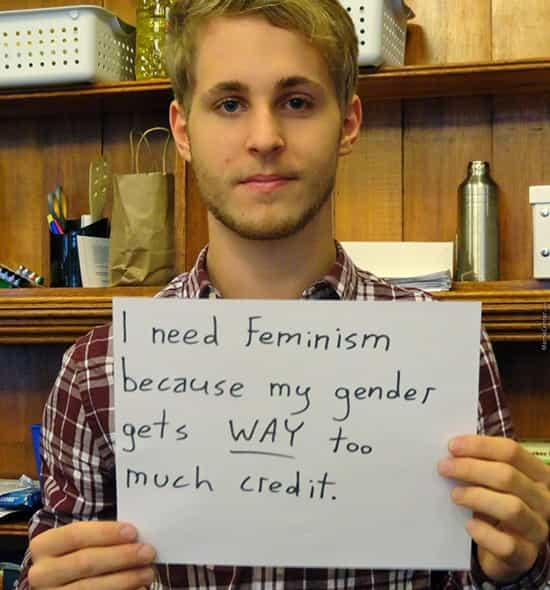

This account syndicates news from other media outlets.


When a woman chooses not to take her husband’s surname after marriage, people perceive her husband as being higher in traits related to femininity and lower in traits related to masculinity. He is also perceived as having less power in the relationship. This is according to a study led by Rachael Robnett of the University of Nevada in the US. The research is published in Springer’s journal Sex Roles and is the first to examine whether people’s perceptions of a man’s personality vary depending on whether his wife adopts his surname or retains her own.
The tradition of women adopting their husbands’ surname after marriage is arguably one of the most widespread gender-role norms in Western cultures. In recent decades, it has gained attention from feminist scholars who want to understand why the surname tradition remains widely endorsed despite marked changes in the role that women play in society and in the labor force.
According to previous studies, women who violate the marital surname tradition are viewed differently from others. They are described in terms of instrumental traits that in a gendered society are typically assigned to men. These include having a higher status, yielding more power, being more self-focused, ambitious and assertive. These traits contrast with the expressive characteristics that are typically assigned to women, such as being more nurturing, kind and having less influence and power.
To date, researchers have not yet examined how a woman’s marital surname choice influences how others perceive her husband. To this end, Robnett and her colleagues carried out three studies in the US and UK. The first two studies showed that husbands whose wives keep their own surnames are often described through terms that are counter to the gender-typical personality traits and power framework used for men. They are described in more expressive than instrumental terms, and are seen to hold less power in a marriage.
“A woman’s marital surname choice therefore has implications for perceptions of her husband’s instrumentality, expressivity, and the distribution of power in the relationship,” says Robnett. “Our findings indicate that people extrapolate from marital surname choices to make more general inferences about a couple’s gender-typed personality traits.”
Results from the third study conducted by Robnett’s team suggest that people are not unanimous in how they think about such cases. People who firmly hold on to traditional gender roles and can be described as hostile sexists react particularly strongly to a man whose wife retains her surname because they see him as being disempowered.

“We know from prior research that people high in hostile sexism respond negatively to women who violate traditional gender roles,” says Robnett. “Our findings show that they also apply stereotypes to nontraditional women’s husbands.”
“This study joins several others in alluding to a link between traditions in heterosexual romantic relationships and power structures favoring men,” says Robnett. “The marital surname tradition is more than just a tradition. It reflects subtle gender-role norms and ideologies that often remain unquestioned despite privileging men.”
Don’t Miss: How The Government Is Robbing Men Of Good Wives